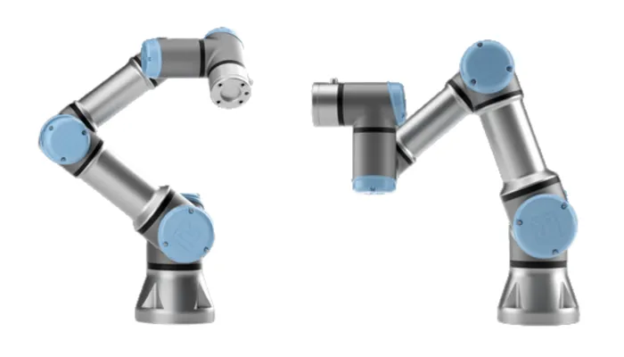

<!DOCTYPE html>
<html lang="pr-BR">
<head>
    <meta charset="UTF-8">
    <meta name="viewport" content="width=device-width, initial-scale=1.0">
    <link rel="stylesheet" href="./style.css">
    <title>Robo UR3e</title>
</head>
<body>
    
</body>
</html>
<main>
    <h1>Robo UR3e</h1>
    <p>O UR3e é um braço robótico colaborativo compacto da Universal Robots, ideal para tarefas de alta precisão em espaços reduzidos, como montagem leve, parafusamento, dispensação e automação de bancada. Com 6 eixos, carga útil de até 3 kg, alcance de 500 mm e repetibilidade de ±0,03 mm, ele é projetado para operar com segurança ao lado de humanos, graças a sensores e sistemas de detecção de colisão. É leve (cerca de 11 kg), fácil de instalar e programar, e oferece rotação infinita no pulso, sendo muito utilizado em linhas de produção, laboratórios e aplicações industriais de pequeno porte.</p>
    <div class="foto_robo">
        
    </div>
    <p>A Universal Robots é uma empresa dinamarquesa fundada em 2005 por três estudantes universitários — Esben Østergaard, Kasper Støy e Kristian Kassow — na cidade de Odense, Dinamarca. 
        universal-robots.com
        +2
        Wikipedia
        +2
        O objetivo inicial era tornar a automação robótica acessível também para pequenas e médias empresas, com braços robóticos colaborativos ("cobots") fáceis de programar e usar. 
        universal-robots.com
        +2
        universal-robots.com
        +2
        
        A empresa ficou conhecida por lançar um cobot comercialmente viável, seguro para operar ao lado de pessoas, eliminando em muitos casos a necessidade de cercas ou proteções físicas rígidas. 
        Wikipedia
        +1
        Em 2015, a Universal Robots foi adquirida pela Teradyne, uma empresa americana, o que lhe deu mais suporte financeiro e escala para crescer globalmente</p>
        <div class="figura_robo">
           
        </div>
    
        <h1>Robo UR3e funcionando</h1>
        <div class="video_robo">
            <iframe width="360" height="360" src="https://www.youtube.com/embed/NGlTRErHkPs?si=JEe4YENZamHRRbGr" title="YouTube video player" frameborder="0" allow="accelerometer; autoplay; clipboard-write; encrypted-media; gyroscope; picture-in-picture; web-share" referrerpolicy="strict-origin-when-cross-origin" allowfullscreen></iframe>
        </div>
    </main>